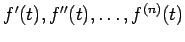
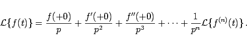

Inhalt Index DeskTop Bronstein

 Integraltransformationen Laplace-Transformation Eigenschaften der Laplace-Transformation Rechenregeln zur Laplace-Transformation
Integraltransformationen Laplace-Transformation Eigenschaften der Laplace-Transformation Rechenregeln zur Laplace-Transformation


Wenn die Ableitungen  für t > 0 existieren und die höchste auftretende Ableitung von f(t) eine Bildfunktion besitzt, dann haben auch die niedrigeren Ableitungen einschließlich f(t) eine Bildfunktion, und es gilt:
Aus der Gleichung (15.13) ergibt sich die folgende Darstellung des LAPLACE-Integrals, die zur genäherten Berechnung von LAPLACE-Integralen genutzt werden kann:
|  | (15.14) |